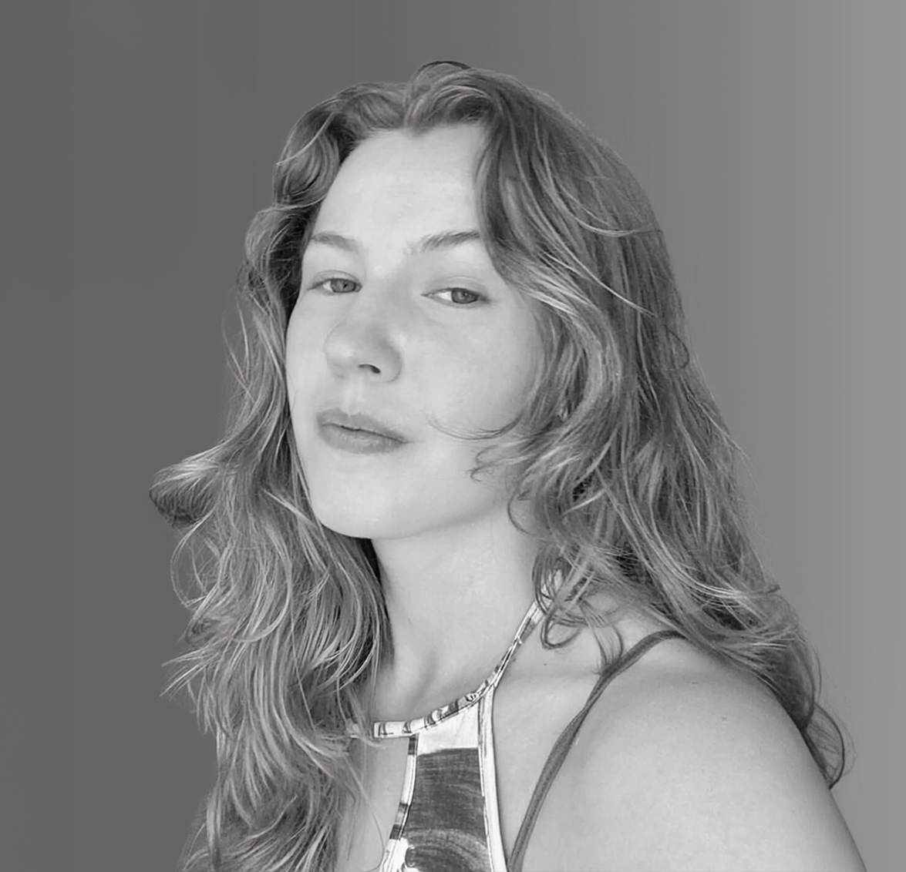
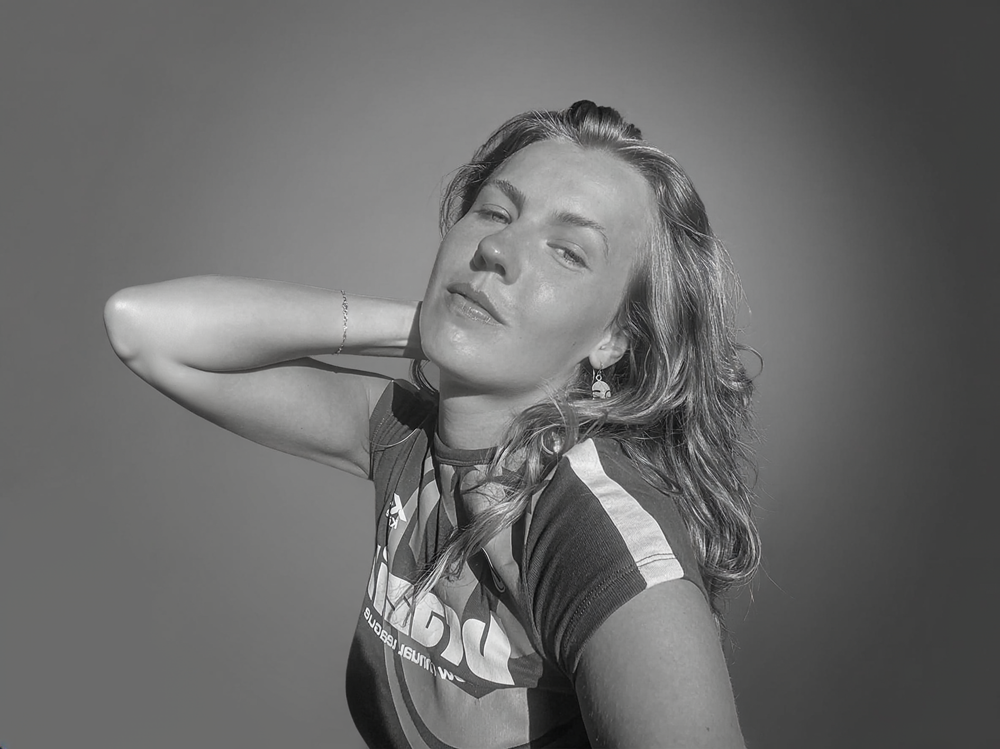
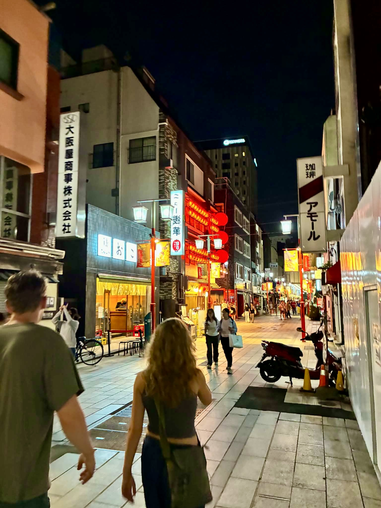
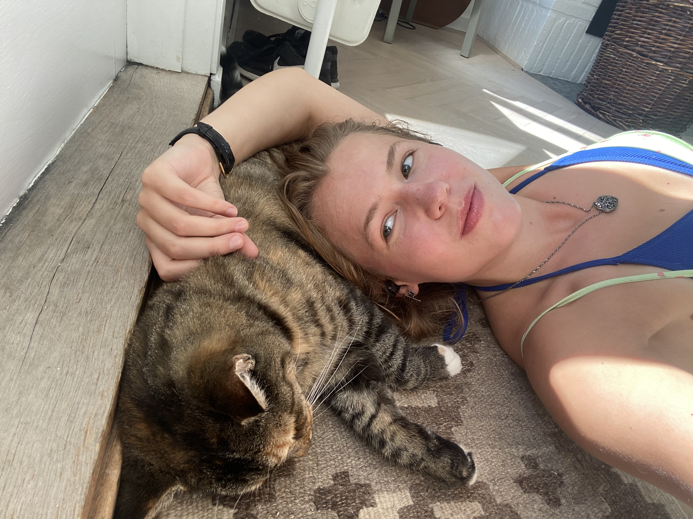
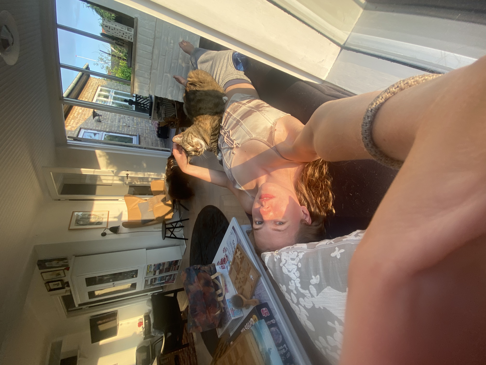

About Me
I'm Kristine, an MSc Medialogy student at Aalborg University in Copenhagen, who enjoys taking a broad problem and turning it into a concrete prototype that people can interact with and benefit from.
I'm interested in the space between technology, design and creativity. I like making things that are not only functional, but also feel engaging. I enjoy working across every part of a project. One day I'm writing code and building systems, the next I'm working on interaction, visual design, storytelling or the user experience.
For me, creative expression happens through technology as much as through visuals. I enjoy designing systems in code where different components and patterns work together as an integrated whole, and finding structured, logical solutions to complex problems. Alongside this, I have a strong passion for visual design and video editing, and I care about how a project looks and communicates, not only how it works.
My approach is shaped by Problem-Based Learning at AAU. I work iteratively: defining a problem, researching it, developing prototypes, testing them with users and refining the design based on what I learn. I find this process rewarding, especially seeing an early concept develop into a solution designed around the needs of the people who will use it.
Collaboration is a big part of how I work, both in project groups and with partners outside the university, like The Blue Planet aquarium and Arbejdermuseet. Designing for real audiences keeps the work grounded, and some of it has gone further than I expected: our serious game LIV became a published conference paper, and the Hearing Loss Simulation has been accepted for UD26 in Galway. You can read more in my Research & Publications.
I'm naturally curious and always want to learn something new. I like experimenting with tools I haven't used before, picking up new skills and seeing where an idea can go. Building things is how I grow, both as a designer and developer and as a person.




